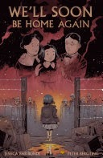

We'll Soon Be Home Again

Six Holocaust survivors share their powerful true stories in this graphic novel made for teen readers. Some were just children when it happened. They speak about how they survived, what they lost, and how they found the strength to keep living. Told in their own words and brought to life through striking comic art, these stories take you inside the ghettos, the concentration camps, and the horrors of the Holocaust. At a time when hate is rising again, this book is a reminder of the past—and why we must never forget.